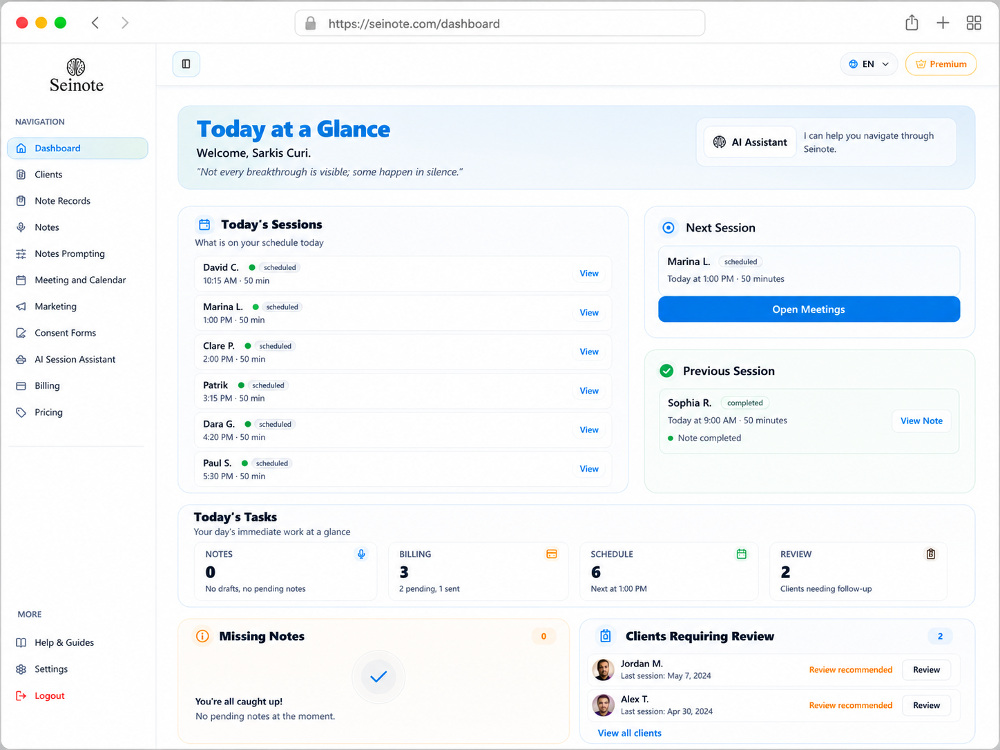
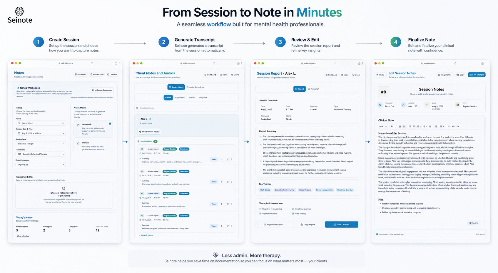
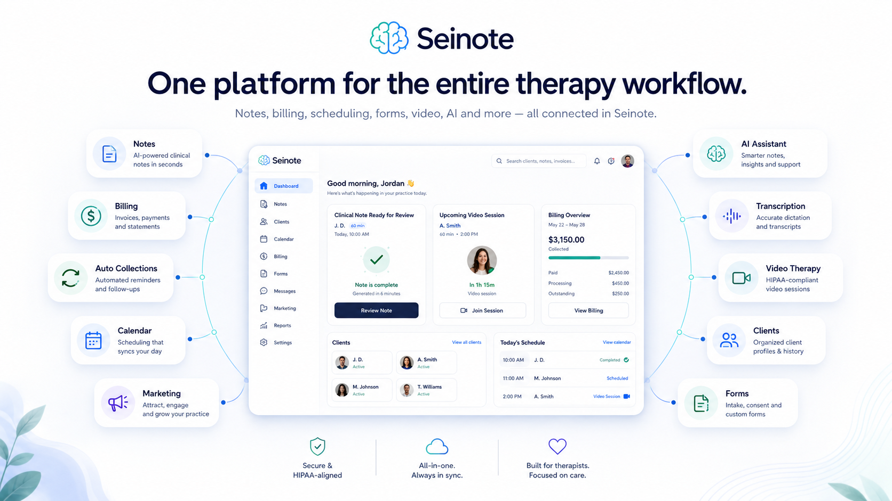

Run the session
Work from one web-based clinical workspace.
Clinical notes, scheduling, video sessions and billing in one calmer workspace for mental health professionals.
14 days free. Then 50% off your selected plan while your subscription remains active. Limited to 25 professionals.

Notes, billing, reminders and scheduling can quietly take over the day.
Seinote helps bring the work back into one clear flow.
Work from one web-based clinical workspace.
AI helps draft. You review, edit and approve.
Notes, schedule, billing and reminders stay connected.


Drafts ready for professional review.
Keep the day organized.
Meet clients without jumping tools.
Keep billing close to the workflow.
Assistance for notes, not a replacement for judgment.
Available through your browser.
Try Seinote in real practice with a simple launch offer and a direct feedback channel.
Start with the Basic plan.
While your subscription remains active.
Share what works and what should improve.
Shaped around real practice routines.
That is the point: reduce the work around the work.
No. AI supports drafting. You stay responsible for the final note.
Seinote is a web platform for clinical notes, scheduling, video sessions and billing workflows.
Mental health professionals in Canada, especially independent and growing practices.
Yes. Early Access is for selected professionals to use Seinote in real practice.
No. Seinote is currently available as a web platform.
Continue to the secure Seinote signup page.